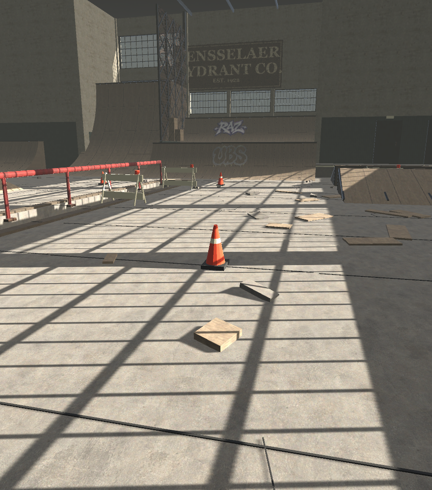
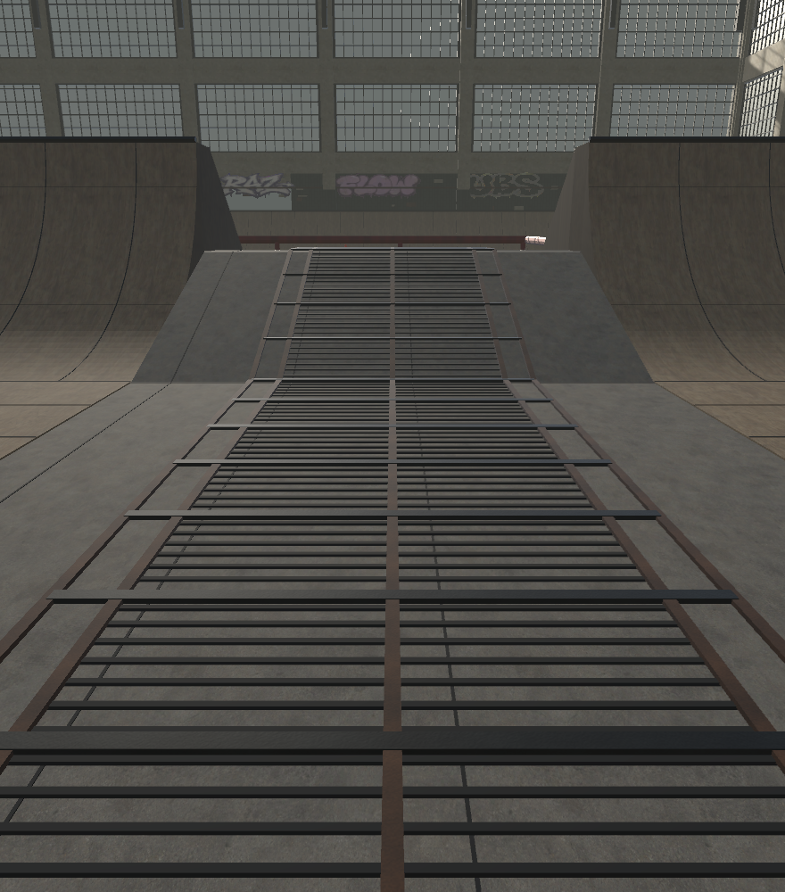
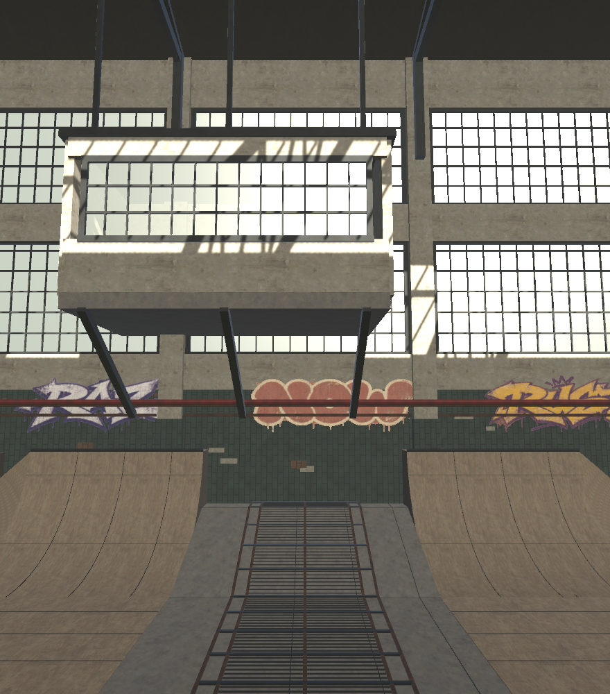

WAREHOUSE / PROPORTION AUDIT / V5
先对准橙衣玩家起点，再沿路线检查比例
“东西有了，但场地太宽”的判断是对的。这轮同时修正场景尺寸和相机：缩窄大厅与南端前坡，重新安排双跳台、北端高坡和扶手拐弯，降低半管与金属通道的高度，并调整斜射日光。起点和接近端墙的构图更接近了；掉头后的半管外坡、办公室遮挡和部分窗格仍有明显差异，不能称为完全复刻。
主相机已设为 Main Camera - P1 start 0132，Game 视图使用 880 × 1000，对应视频左半屏。以下 Unity 图都来自同一份保存场景，统一垂直视场角 64°；按时间改变相机位置和朝向，没有为每张图单独拉伸设施。时间点依据用户截图及浏览器暂停观察，未恢复原游戏的逐帧跟随相机数据。
1:32 · 橙衣玩家起点
玩家在沟槽西侧，朝南端凹入平台。画面从左到右是高坡开间、UBS 前坡、双门低台；红扶手在左前方，双跳台在右前方。相机位于玩家身后，位置约 (-11.34, 1.96, 10.30)，俯角 13.77°、朝向 166.67°。


仍不同：铁笼遮挡厂牌左边，双门及周围墙面细节不足，地面杂物和光斑分布不同。没有添加玩家，所以原图中被人物遮住的区域在 Unity 图里可见。
叠图查看，也可以切回修改前
把参考透明度调到 0 看 Unity，调到 100 看视频；中间值用于看边缘偏移。这里只裁出原图左半屏并按相同比例显示，没有对局部建筑做图像变形。
起点的量化核对：7 个手工选取的结构点
选取前坡两端唇口、右端坡脚、厂牌三个角和扶手远端。统一到 880 × 1000 后，投影点均方根距离由约 117.9 px 降到 8.7 px。这是用于调参的同一张图上的误差，不能代表全图相似度，也不能代表其他视角达到这个精度。原图点位由目测选取，边缘遮挡会带来误差。
按橙衣玩家行进顺序，一张一张看
前两张后续视角也用于检查前坡、厂牌与双门的透视关系；后续转身和腾空镜头仍只是估计机位。每一行都写明已经改了什么、还差在哪里。
反向看金属通道与办公室
金属通道在半管中央沿东西向贯通，办公室位于东端上方。灰色区域现在包含两侧平板与中央格栅，而不只是原来的窄格栅。下面是结构检查视角，不作为与 2:19 精确同机位的证据。


这次改的是实际几何，不只有镜头
| 部分 | 已保存的变化 | 依据与剩余限制 |
|---|---|---|
| 大厅与南端开间 | 大厅 X 向缩为原来的 82%，主厅约 45.92 × 42 m；UBS 前坡跨度从 22 m 调至约 12.17 m，高 2.35 m；后方平台与开间边界同步调整。 | 起点参考中前坡比旧版窄得多，而厂牌宽度本来较接近，因此不能只统一改 FOV。所有米制尺寸都是重建估值。 |
| 厂牌与高坡 | 南端厂牌中心降至约 9.30 m；独立高坡升至约 7.5 m；南端两翼改为主要实墙，双门位置重新排列。 | 1:32–1:35 的端墙轮廓；窗格、铁笼和门的造型未完全一致。 |
| 双跳台与沟槽 | 双跳台整体向南移 8 m、向西移约 1.8 m；跨度调至约 6.23 m；红扶手高调至 1.20 m。 | 使跳台在起点画面里更远、更小。扶手北端横向拐弯已改为朝东。 |
| 北端箱子高坡 | 高坡、箱子和铁笼向东移；高唇两侧增加逐渐降低的过渡，接回连续低坡。 | 1:39 的扶手尽头与箱子高坡关系。轮廓仍是近似重建。 |
| 半管与金属通道 | 木坡高约 2.59 m，金属坡顶约 1.18 m；灰色开口宽 5.2 m，中央格栅宽 2.8 m。 | 按 1:38、1:52 的高低关系降低。外坡侧面形状、倾角和与沟槽间距仍需继续细化。 |
| 日光 | 调整为西侧斜射，降低太阳高度；起点地面出现横跨画面的窗格阴影，南端端墙相对更暗。 | 方向更接近参考，光斑形状、曝光、体积光和材质响应仍不同。 |
保存、验证和当前边界
已重新打开保存场景，检查 79 个网格、43 个静态碰撞体、70 个弧坡采样点、243 个金属带支撑采样点和 6 处平台支撑点。原有场景 Assets/Max/MaxScene.unity 未替换。完整输出见 验证记录。
当前场景为 Assets/Max/WarehouseRecreation.unity。Hierarchy 中有主相机、9 个按时间命名的停用检查相机，以及 Video route anchors - estimated poses 起点/路线标记。所有机位都能在场景中直接检查。
这轮完成的是比例和构图的一次实质校正，尚非 1:1 还原。最明确的剩余差异是：掉头后半管外坡的轮廓和距离、1:46 办公室遮挡、部分窗格与开间比例，以及墙面材质和灯光细节。没有恢复真实滑板轨迹，也没有测试滑板或 Leap Motion 控制器手感。
本轮修改前完整备份位于 Source~/BeforeProportionAudit~。上轮的方向/拓扑观察记录仍保留在 RouteFrameAudit.csv；旧比例以本页 V5 为准。生成器为 Source~/WarehouseBuilder.cs；直接重跑会覆盖生成场景和生成网格，手工调整前请另存版本。